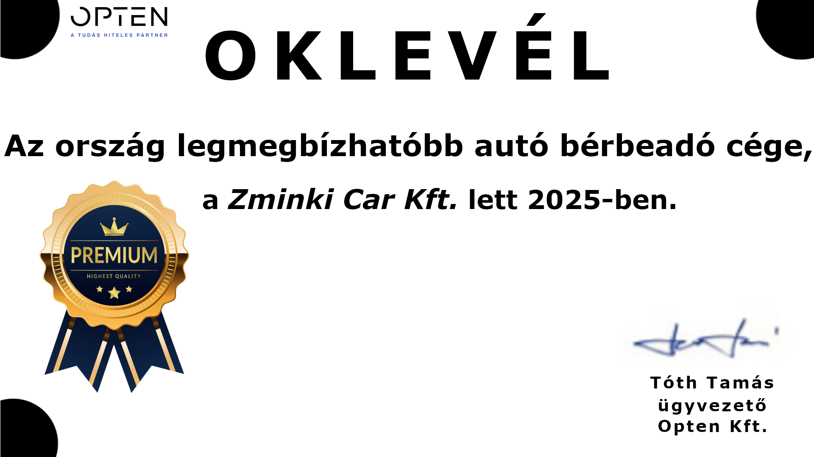

AZ OPTEN ÉRTÉKELÉSE
Zminki Car Kft.
A Zminki Car Kft. az autókölcsönzési piac egyik kiemelkedő szereplője, amely az elmúlt években következetesen bizonyította megbízhatóságát, stabil működését és ügyfélközpontú szolgáltatási szemléletét. A vállalat pénzügyi és működési mutatói alapján egyértelműen a hazai autóbérlési szektor élvonalába tartozik.
Megbízhatóság és stabilitás
A cég működése átlátható, pénzügyi háttere rendezett, partnereivel szemben pedig hosszú távon is kiszámítható üzleti magatartást tanúsít. A rendelkezésre álló adatok alapján a Zminki Car Kft. kockázati besorolása kedvező, amely a piaci átlagot meghaladó stabilitást jelez.
Ügyfélközpontú szolgáltatás
A vállalat szolgáltatásai magas színvonalúak, flottája folyamatosan karbantartott és korszerű. A visszajelzések alapján a cég kiemelkedik gyors reakcióidejével, rugalmasságával és az ügyfelek iránt tanúsított korrekt hozzáállásával.
Piaci pozíció
A Zminki Car Kft. az autóbérlési szegmensben országos szinten is az egyik legmegbízhatóbb vállalkozásnak számít. A cég működése példamutató, és a rendelkezésre álló adatok alapján a jövőben is stabil, növekedésre képes szereplő maradhat.

